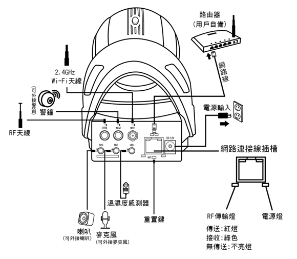

產品特色
- 內置智慧家居系統服務控制器的多功能網路攝影機。
- 可同時配對警報設備及智慧型插座。
- 支援二維條碼(QR Code)安裝，隨插即用，簡易安裝好上手。
- 提供Android及iOS系統APP。
- 支援有線及Wi-Fi無線網路。
- 內置蜂鳴器，並可外接警笛。
- 支援高畫質畫面，H.264高效編碼，支援夜視功能。
- 支援攝影鏡頭搖控操作，並可設定拍照或錄影的預設位置。
- 鏡頭可支援水平旋轉355° ，垂直旋轉100°
。
- 支援Micro SD卡連續錄影(最大32G)，可透過手機觀看即時及回放儲存的影像，亦可直接透過手機錄影拍照。
- 外接溫濕度感測器。
- 支援雙向語音對講，讓您可以透過手機與現場通話。
- 獨立影像傳輸，最大限度保障使用者隱私。
